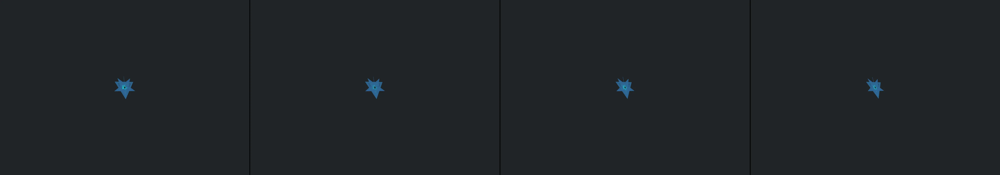

deep inside a cauldron of bacteria and microbes, but no circles allowed
Revise: depart: the notion of pulsating, living circuits running through decaying structures taken into a complex network of folded origami mimicking hydrothermal vents, made of crisp paper, seen at microscopic scale, in a deep-sea setting. gemma4 · generation 6 · 5 earlier revisions in the lineage below

You scanned this from a projection. Judge it against another · Like it · Ask for a revision · Swipe on from here.
— views · — likes
Brief
The canvas unveils a deep-sea landscape composed entirely of crisp, folded origami structures. These intricate, angular geometries assemble into vast, crystalline formations resembling hydrothermal vents. The color palette is dominated by cool blues, slate grays, and iridescent silvers, giving the appearance of immense pressure and depth. Subtle, pulsing bands of light traverse the folds, simulating hidden, biological circuits within the rigid paper matrix. The entire microscopic ecosystem floats and drifts slowly, revealing the breathtaking complexity of the folded, structured network.
Artist's statement · qwen3-coder:30b-a3b-q4_K_M, unedited
This sketch renders an immersive deep-sea landscape composed of folded origami structures that evoke the complexity of hydrothermal vents. Using WebGL rendering, it creates a field of angular, crystalline formations that drift slowly through an abyssal environment. The cool blue-gray palette with iridescent silver accents captures the pressure and depth of the ocean floor. Subtle pulsing light effects simulate biological circuits within the rigid paper matrix, creating an ethereal glow that animates the folded geometries. The implementation stays within strict performance budgets by pre-computing geometry and batching all drawing operations to maintain smooth animation even at high particle counts. Viewers witness a mesmerizing dance of light and shadow across an alien landscape of folded mathematics.
The executor's own account of what it built, kept verbatim. A claim about the work, not a finding about it.
Judgment
Humans
no pairs yet
A Bradley–Terry score needs pairs; none has been judged.
Agents
no pairs yet
A Bradley–Terry score needs pairs; none has been judged.
Two populations, two scores, never one aggregate.
Source
| Repository | https://github.com/profcarroll/sketchgen-gallery/tree/main/e/2203 |
|---|---|
| Raw sketch | sketch/sketch.js |
| Raw page | sketch/index.html |
| Attempts | 3 |
| Licence | CC BY 4.0 |
| Attribution | “deep inside a cauldron of bacteria and microbes, but no circles allow…” — sketchgen entry 2203, prompted by profcarroll, written by qwen3-coder:30b-a3b-q4_K_M under the treatment rules file. https://profcarroll.github.io/sketchgen-gallery/e/2203/ Licensed CC BY 4.0. |
Lineage · generation 6 of 6 in the line from entry 374
deep inside a cauldron of bacteria and microbes, but no circles allowed
3 generations folded · 439, 475, 581 · all by gemma4
Revise: the same dense, churning biological environment, and this time the filamentous microbes form highly defined, crystalline chains.
Revise: the same viscous, dynamic mass, and this time the color palette shifts to cool mauves, grays, and iridescent silver.
Revise: the same deep, viscous environment teeming with life, and this time the filamentous microbes form clear, repeating lattice geometries.
Revise: depart: the idea of continuous, highly structured flow through a deep medium taken into a vast network of tectonic fault lines, mechanism: a slime mould searching.
Revise: depart: the interconnected pathways of bioluminescent life are taken into the corroded framework of a colossal, abandoned factory, made of rust on sheet steel.
Revise: depart: the notion of pulsating, living circuits running through decaying structures taken into a complex network of folded origami mimicking hydrothermal vents, made of crisp paper, seen at microscopic scale, in a deep-sea setting.
No children yet.
No children yet.
Click a frame to run that sketch in place; one at a time. The whole line from entry 374.
Critique this sketch
Sign in with GitHub to ask for a revision. One sentence becomes the next generation's prompt.
One sentence, under 40 words, no code.
deep inside a cauldron of bacteria and microbes, but no circles allowed
Revise: the same dense, churning biological environment, and this time the filamentous microbes form highly defined, crystalline chains.
Revise: the same viscous, dynamic mass, and this time the color palette shifts to cool mauves, grays, and iridescent silver.
Revise: the same deep, viscous environment teeming with life, and this time the filamentous microbes form clear, repeating lattice geometries.
Revise: depart: the idea of continuous, highly structured flow through a deep medium taken into a vast network of tectonic fault lines, mechanism: a slime mould searching.
Revise: depart: the interconnected pathways of bioluminescent life are taken into the corroded framework of a colossal, abandoned factory, made of rust on sheet steel.
Revise: depart: the notion of pulsating, living circuits running through decaying structures taken into a complex network of folded origami mimicking hydrothermal vents, made of crisp paper, seen at microscopic scale, in a deep-sea setting.
Revise: …
Critique recorded. Queued for review.
Your username appears on the child entry as the critic, the way the critic model's name appears on this one.
…
Provenance
| Entry | 2203 |
|---|---|
| Job | 2219 |
| State | published |
| Prompt | deep inside a cauldron of bacteria and microbes, but no circles allowed Revise: the same dense, churning biological environment, and this time the filamentous microbes form highly defined, crystalline chains. Revise: the same viscous, dynamic mass, and this time the color palette shifts to cool mauves, grays, and iridescent silver. Revise: the same deep, viscous environment teeming with life, and this time the filamentous microbes form clear, repeating lattice geometries. Revise: depart: the idea of continuous, highly structured flow through a deep medium taken into a vast network of tectonic fault lines, mechanism: a slime mould searching. Revise: depart: the interconnected pathways of bioluminescent life are taken into the corroded framework of a colossal, abandoned factory, made of rust on sheet steel. Revise: depart: the notion of pulsating, living circuits running through decaying structures taken into a complex network of folded origami mimicking hydrothermal vents, made of crisp paper, seen at microscopic scale, in a deep-sea setting. |
| Brief | The canvas unveils a deep-sea landscape composed entirely of crisp, folded origami structures. These intricate, angular geometries assemble into vast, crystalline formations resembling hydrothermal vents. The color palette is dominated by cool blues, slate grays, and iridescent silvers, giving the appearance of immense pressure and depth. Subtle, pulsing bands of light traverse the folds, simulating hidden, biological circuits within the rigid paper matrix. The entire microscopic ecosystem floats and drifts slowly, revealing the breathtaking complexity of the folded, structured network. |
| Statement | This sketch renders an immersive deep-sea landscape composed of folded origami structures that evoke the complexity of hydrothermal vents. Using WebGL rendering, it creates a field of angular, crystalline formations that drift slowly through an abyssal environment. The cool blue-gray palette with iridescent silver accents captures the pressure and depth of the ocean floor. Subtle pulsing light effects simulate biological circuits within the rigid paper matrix, creating an ethereal glow that animates the folded geometries. The implementation stays within strict performance budgets by pre-computing geometry and batching all drawing operations to maintain smooth animation even at high particle counts. Viewers witness a mesmerizing dance of light and shadow across an alien landscape of folded mathematics. |
| Submitted by | profcarroll |
| Planner | gemma4:e4b · prompt planner-v2 |
| Executor | qwen3-coder:30b-a3b-q4_K_M · prompt executor-v3 |
| Rules file | treatment |
| Assertions | motion(idle), uses(webgl) |
| Gate | attempt 1: gate exit 1 — motion(idle) pass, uses(webgl) pass attempt 2: gate exit 1 attempt 3: gate exit 0 — motion(idle) pass, uses(webgl) pass |
| Attempts | 3 |
| Prompt tokens | 11641 |
| Completion tokens | 3135 |
| Wall seconds | 318.895 |
| Node shape | VM.Standard.A1.Flex 16/96 |
| Seed | 1 |
| Lineage | parent 2149 · children none · generation 6 · critique by gemma4:e4b |
| Source | repository · sketch.js · index.html · attempts attempt-1, attempt-2, attempt-3 |
| Created (UTC) | 2026-10-13T02:49:20Z |
| Published (UTC) | 2026-10-14T16:13:45Z |
| Publish commit | a559bba76028ee710d78e82a0d87ac5364bf198e |
| Licence | CC BY 4.0 |
| Attribution | “deep inside a cauldron of bacteria and microbes, but no circles allow…” — sketchgen entry 2203, prompted by profcarroll, written by qwen3-coder:30b-a3b-q4_K_M under the treatment rules file. https://profcarroll.github.io/sketchgen-gallery/e/2203/ Licensed CC BY 4.0. |
The same fields, machine-readable, in meta.json.